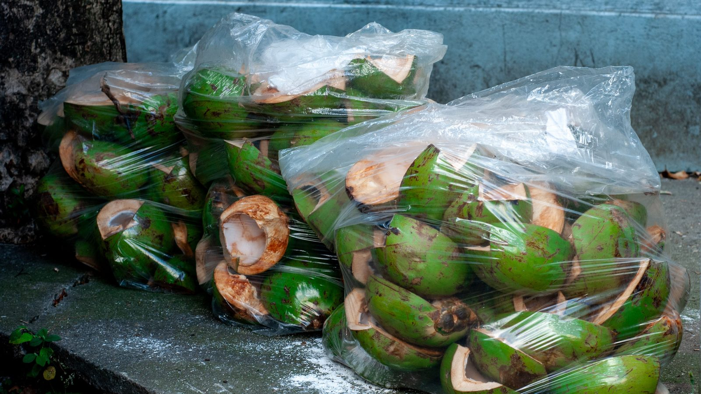

Itapema · Poder Público
Itapema · Poder PúblicoA sessão limpa-pauta de Itapema terminou em 18 aprovações por 12 a 0
A sessão em que o projeto do coco verde passou.
A Câmara de Itapema aprovou por 12 a 0 o Projeto de Lei 398/2025, que cria o Programa Municipal de Reciclagem do Coco Verde e manda abrir pontos de descarte na orla, com ênfase no veraneio. Abrimos o trâmite no portal da Câmara: o texto foi protocolado em 11 de agosto de 2025, esperou 393 dias até o voto e seguiu para o Executivo em 10 de setembro. Até esta publicação ele ainda consta como aprovado, e não como sancionado.
Em 30 segundos · Modo de Leitura, formato original Santa Informa
A Câmara de Itapema aprovou um projeto.
Ele trata do coco verde da praia.
É aquele que a gente bebe na areia.
Depois de bebido, vira casca.
A casca demora muito para se decompor.
E acumula água parada dentro dela.
O projeto cria um programa municipal.
O programa junta coleta e reciclagem.
Manda abrir pontos de descarte na orla.
Com atenção especial no veraneio.
A ideia é o coco não ficar na praia.
A casca pode virar fibra.
Fibra serve na construção e na decoração.
O texto é do vereador Yagan Dadam.
Foi protocolado em agosto de 2025.
As três comissões deram parecer favorável.
Todas no mesmo dia, em abril de 2026.
O voto veio só em 8 de setembro de 2026.
Foram 393 dias de espera.
Aprovado por 12 a 0.
Seguiu para o prefeito em 10 de setembro.
Ele pode sancionar ou vetar.
Até agora não saiu lei no Diário Oficial.
O portal ainda marca o projeto como aprovado.
O texto diz que o Executivo poderá fazer convênio.
Poderá, não deverá.
E não fixa prazo para regulamentar.
Nem diz quantos pontos de coleta serão.
Meio AmbientePublicada em Redação Santa Informa

Na 28ª Sessão Ordinária, em 8 de setembro, a Câmara de Itapema aprovou o Projeto de Lei 398/2025, do vereador Yagan Dadam, que cria o Programa Municipal de Reciclagem do Coco Verde. Foram 12 votos favoráveis, nenhum contrário, nenhuma abstenção e nenhuma ausência. A sessão inteira já foi contada aqui em 11 de setembro, quando somamos 18 aprovações no mesmo dia. O do coco verde é um dos 18, e merece linha própria porque trata de um problema que a cidade só vê no verão.
Lemos o projeto inteiro. O artigo 4º lista oito ações, e a oitava é a mais concreta: criar locais específicos para o descarte de cocos verdes na orla do município, com ênfase no período de veraneio, para evitar que eles sejam jogados na praia. As outras sete tratam de campanha de conscientização, apoio a cooperativa e pequena empresa, divulgação dos produtos feitos com o material e uso de instrumentos tributários e de fiscalização. O artigo 2º explica para que serve: reduzir o que vai para o aterro, gerar emprego e renda e incentivar o uso da fibra do coco na construção civil, na indústria automobilística, em utilidades domésticas e em decoração. Na justificativa, o autor escreve que a casca acumulada segura líquido e ajuda a proliferar insetos e microrganismos, e que a decomposição é lenta.
Fomos ao portal de proposições da Câmara e abrimos o histórico completo. O texto foi protocolado em 11 de agosto de 2025 e lido no plenário em 19 de agosto do mesmo ano. Passou por três comissões: Legislação e Justiça, Turismo e Meio Ambiente, e Finanças e Orçamento. Os três pareceres favoráveis foram registrados no mesmo dia, em 10 de abril de 2026, oito meses depois do protocolo. Aí ficou parado de novo até ser agendado em 4 de setembro e votado em 8 de setembro. Do protocolo ao voto foram 393 dias. Em 10 de setembro o projeto foi enviado ao Executivo para sancionar ou vetar. No dia desta publicação, o portal da Câmara ainda registra a situação como Aprovado, e não como Sancionado, que é um status que o próprio sistema usa. Conferimos também o Diário Oficial dos Municípios: a última lei de Itapema publicada por lá é a de 3 de setembro, anterior ao envio, então a lei do coco verde ainda não apareceu.
Enquanto não houver sanção e regulamentação, nada muda na areia. E, mesmo depois disso, o texto deixa espaço grande para o Executivo decidir. O artigo 3º diz que o Poder Executivo poderá fazer convênio com associações, cooperativas e pessoas físicas para executar a coleta, e poderá é diferente de deverá. O artigo 6º manda regulamentar a lei no que couber, sem fixar prazo. O artigo 5º diz que a despesa sai de dotação orçamentária própria, sem apontar qual nem quanto. Ou seja: a lei cria a moldura, e o desenho fica para depois.
O resumo de 30 segundos está no topo e a versão completa é o texto acima. Aqui ficam as três leituras da casa sobre o mesmo assunto.
Clara, a otimista
Esse é daqueles projetos que nascem de olhar para o chão da praia. Quem anda na orla em janeiro sabe: casca de coco encostada no lixo, no canteiro, no pé do coqueiro. Uma lei que manda colocar ponto de descarte certo, no lugar onde o coco é consumido, resolve um incômodo que todo mundo vê e quase ninguém tinha escrito em papel.
E tem a parte boa que nem aparece no título. A fibra do coco vira material de construção, de estofado, de vaso. Se a coleta for feita por cooperativa, o que hoje é peso no caminhão do lixo passa a ser renda para gente da cidade. Aprovado por 12 a 0, sem um voto contra, o que já diz que a ideia não tem adversário aqui.
Seu Prudêncio, o criterioso
Merece atenção o verbo do artigo 3º. Ele diz que o Executivo poderá firmar convênio com cooperativa e associação para fazer a coleta. Poderá é faculdade, não obrigação. Junte a isso o artigo 6º, que manda regulamentar sem prazo, e o artigo 5º, que remete a dotação própria sem apontar valor, e o resultado é uma lei que depende inteiramente da vontade de quem executa.
Vale acompanhar o calendário. O projeto fala em ênfase no veraneio, e a temporada começa daqui a pouco mais de dois meses. Instalar ponto de coleta na orla, definir quem recolhe e para onde leva não se faz em quinze dias. Se a sanção e a regulamentação não saírem logo, o primeiro verão da lei passa sem ela.
Uma sugestão útil: no decreto de regulamentação, publicar o número de pontos, os endereços e o responsável pela retirada. Dito isso, o projeto é bem construído. Tem objetivo claro, tem ação concreta no artigo 4º, tem os três pareceres favoráveis das comissões e passou por unanimidade. É o tipo de norma de custo baixo que, se sair do papel, muda a cara da areia na temporada.
Caco, o sarcástico
Trezentos e noventa e três dias. Esse é o tempo que o coco verde esperou para ser votado em Itapema. Só a espera no plenário já daria para o coco germinar, virar coqueiro e dar coco novo, que aí precisaria de outro projeto.
Gosto especialmente de os três pareceres das comissões terem saído todos em 10 de abril. Oito meses de silêncio e depois três assinaturas no mesmo dia. Ou foi um dia muito produtivo, ou o calendário tem os seus mistérios.
Agora sem ironia: o projeto é bom, é barato e é sobre uma coisa que a gente vê com o próprio olho toda temporada. Que chegue ao verão valendo, e não em forma de boa intenção arquivada.
Fontes: o placar de 12 a 0, a data da 28ª Sessão Ordinária de 8 de setembro de 2026, o protocolo em 11 de agosto de 2025, os pareceres das três comissões em 10 de abril de 2026, o envio ao Executivo em 10 de setembro de 2026 e a situação atual do projeto estão no histórico de trâmite do Projeto de Lei Ordinária 398/2025, no portal de proposições da Câmara de Vereadores de Itapema. O texto dos artigos 1º a 7º e a justificativa estão na íntegra do projeto, no mesmo portal. O anúncio da aprovação está na notícia Projeto aprovado incentiva reciclagem e reaproveitamento do coco verde consumido na praia, publicada pela Câmara em 15 de setembro de 2026. A conferência de que a lei ainda não foi publicada foi feita por nós em 20 de setembro de 2026 na busca do Diário Oficial dos Municípios de Santa Catarina, onde a última lei de Itapema disponível é de 3 de setembro de 2026. O resultado completo da sessão está na nossa matéria de 11 de setembro.
Itapema · Poder PúblicoA sessão em que o projeto do coco verde passou.
 Itapema · Poder Público
Itapema · Poder PúblicoA fila onde o coco verde esperou 393 dias.
 Navegantes · Meio Ambiente
Navegantes · Meio AmbienteComo a cidade vizinha mede o lixo dos próprios eventos.